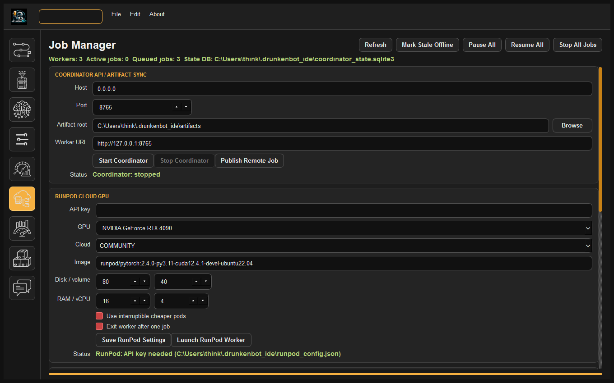

DrunkenBot LLM-IDE: Comprehensive Technical Architecture Specification¶
This document provides an exhaustive technical and algorithmic specification of the DrunkenBot LLM-IDE architecture, detailing the decoupled computational engine, neural architectures, data ingestion and target masking pipelines, detached process supervision, parameter-efficient fine-tuning (PEFT), machine-bound cryptographic licensing, and export subsystems.
Table of Contents¶
- System Overview & Architecture Boundary
- Data Ingestion, Tokenization & Target Masking
- Neural Architecture & Transformer Internals
- Training Orchestration & Process Supervision
- Parameter-Efficient Fine-Tuning (PEFT / LoRA)
- Machine-Bound Encrypted Licensing Subsystem
- Export Bay & Model Serialization Subsystem
- Local Inference & Chat Engine
- UI Component Architecture & Screen Reference
1. System Overview & Architecture Boundary¶
DrunkenBot LLM-IDE follows a strict unidirectional decoupled architecture. The codebase is cleanly split into two isolated layers:
- engine/: Pure computational Python and PyTorch backend. Contains zero dependencies on Qt, GUI widgets, or display servers. It can be executed headlessly via CLI, within remote worker processes, or in automated batch scripts.
- interface/: PySide6 (Qt for Python) desktop application. Manages UI widgets, reactive event loops, asynchronous worker bridges, SQLite telemetry polling, and user configurations.
graph TD
subgraph UI_Layer ["Interface Layer (PySide6 Desktop Application)"]
A[App Entry Point: run_app.py] --> B[StartupValidationSplash]
B --> C[ProjectChoiceDialog]
C --> D[MainWindow & AppShell]
D --> E1[Dataset Blueprint Screen]
D --> E2[Dataset Ingestion Screen]
D --> E3[Neural Forge Training Screen]
D --> E4[Fine-Tuning Lab Screen]
D --> E5[Live Telemetry Screen]
D --> E6[Job Manager Screen]
D --> E7[Benchmark Screen]
D --> E8[Export Bay Screen]
D --> E9[Chat Studio Screen]
end
subgraph IPC_Bridge ["Asynchronous Inter-Process Bridge"]
D <-->|IPC / Heartbeat Verification| F[TrainingProcessController]
F <-->|SQLite Batched Telemetry| G[(runs/telemetry.db)]
F <-->|Run Manifest & Process Signals| H[manifest.json & stop_event]
end
subgraph Engine_Layer ["Computational Engine Layer (Pure Python / PyTorch)"]
F -->|Spawns Detached Process| I[training_worker.py]
I --> J[training_orchestrator.py]
J --> K[MicroGPT / Transformer Architecture]
J --> L[LoRA Injected Adapters]
J --> M[Streaming DataLoader & TokenDataset]
M --> N[Binary Memory Maps: train_tokens.npy & train_targets.npy]
E2 -->|Data Compilation| O[dataset_build.py & data_core.py]
O --> P[BPE Tokenizer: tokenizer.py]
O --> Q[Prompt Loss Masking: target_masking.py]
E8 -->|Model Export| R[export.py: GGUF / SafeTensors / HF]
E9 -->|Local Chat| S[llama_chat.py & microgpt_chat.py]
endKey Architectural Principles¶
- Unidirectional Dependency:
engine/never importsinterface/. All communication between the backend and UI occurs through standard files, signals, or SQLite tables. - Crash-Resilient Detached Training: Long-running training jobs execute in an independent operating system process. Closing the desktop UI detaches from the worker without aborting the run. Upon reopening, the IDE verifies the process identity (PID + creation timestamp) and seamlessly reattaches.
- Zero-Copy Memory-Mapped Arrays: Tokenized datasets are stored as raw NumPy binary arrays (
.npy), allowing gigabyte-scale datasets to be loaded instantaneously without memory bloat.
2. Data Ingestion, Tokenization & Target Masking¶
The ingestion pipeline converts heterogeneous multi-format files into structured, tokenized binary streams.
flowchart LR
A[Raw Source Data<br/>.txt, .md, .pdf, .jsonl] --> B{Document Stage / Kind}
B -->|Prose / Technical Text| C[clean_text<br/>Whitespace Normalization]
B -->|Source Code Files| D[clean_code<br/>Preserve Indentation & Fences]
B -->|Instruction / Chat| E[JSONL Parser<br/>Extract Turns]
C & D & E --> F[Diversity & Repetition Filter<br/>MAX_REPETITIVE_UNIT_RATIO = 0.80<br/>MIN_UNIQUE_UNITS = 100]
F --> G[BPE Tokenizer Training<br/>Byte-Pair Encoding]
G --> H[Prompt Loss Masking Engine<br/>target_masking.py]
H --> I[Tokens Array<br/>train_tokens.npy]
H --> J[Targets Array with -100 Masks<br/>train_targets.npy]2.1 Indentation-Preserving Code Ingestion¶
In engine/data_core.py, prose text is normalized using clean_text, which trims excessive whitespace. However, programming languages rely strictly on indentation and newlines (Python indentation, C/C++ brackets, YAML structures).
The clean_code function ensures:
- Line endings are unified to \n.
- Horizontal tabs and leading indentation spaces are preserved exactly.
- Excessive vertical blank lines (\(\ge 4\)) are compressed to triple newlines (\n\n\n), preventing document fragmentation while retaining block separation.
2.2 Adaptive Diversity & Repetition Filtering¶
To prevent models from memorizing artificial boilerplate or synthetic web scraping padding, engine/dataset_corpus.py implements diversity filtering:
- Repetitive Unit Ratio:
$\(\text{Ratio} = \frac{\text{Duplicate Units}}{\text{Total Units}}\)$
Documents exceeding MAX_REPETITIVE_UNIT_RATIO = 0.80 (80%) are filtered out.
- Absolute Richness Override:
Large technical manuals, API references, and monolithic codebases naturally repeat boilerplate (e.g. import, return 0;, class, chapter titles). If a file contains \(\ge 100\) unique substantial units (MIN_UNIQUE_UNITS_FOR_DIVERSITY = 100), it is classified as rich technical material and is never rejected.
2.3 Prompt Loss Masking (IGNORE_INDEX = -100)¶
In standard language modeling, cross-entropy loss is computed over all tokens. However, in instruction, conversation, code, and tool-calling fine-tuning, training the model to predict the prompt/question causes catastrophic forgetting and wastes capacity memorizing queries.
engine/target_masking.py applies token target masking: 1. Boundary Regex: Searches for conversation role headers:
2. Span Detection: Pinpoints exact byte offsets corresponding to assistant completion spans. 3. Mask Assignment: All tokens belonging toSystem: guidance, User: queries, and structural formatting are assigned the PyTorch cross-entropy ignore value:
$\(\text{Target}[i] = -100 \quad (\text{if token } i \text{ is in prompt span})\)$
$\(\text{Target}[i] = \text{Token}[i] \quad (\text{if token } i \text{ is in assistant completion})\)$
Tokens: [System: You are an expert python coder.\nUser: Write a factorial function.\nAssistant: def factorial(n):\n return 1 if n<=1 else n*factorial(n-1)<eos>]
Targets: [-100, -100, -100, -100, -100, -100, ... -100, -100, -100, -100, -100, def, factorial, (n, ):, \n, return, 1, if, ..., <eos>]
^ Loss computed ONLY from here onward
3. Neural Architecture & Transformer Internals¶
The core model in engine/model.py is a highly configurable, modern decoder-only generative transformer (MicroGPT).
graph TD
subgraph Transformer_Block ["Transformer Layer (Repeated N_Layer Times)"]
IN[Input Tensor: X] --> N1[RMSNorm / LayerNorm]
N1 --> ATTN[Self-Attention: MHA / GQA / MQA<br/>+ Rotary Positional Embeddings (RoPE)<br/>+ PyTorch Scaled Dot-Product Attention]
ATTN --> RES1[Residual Addition: X + Attn(X)]
RES1 --> N2[RMSNorm / LayerNorm]
N2 --> FFN[Feed-Forward Network<br/>SwiGLU: SiLU(W_gate X) * (W_up X) * W_down<br/>or Standard GELU MLP]
FFN --> RES2[Residual Addition: RES1 + FFN(RES1)]
end3.1 Rotary Position Embeddings (RoPE)¶
Instead of absolute positional embedding tables that fail to extrapolate beyond the training sequence length, MicroGPT uses Rotary Positional Embeddings. For a query or key vector at position \(m\), RoPE rotates pairs of coordinates in the complex plane:
where \(\theta_i = \theta_{\text{base}}^{-2(i-1)/d}\). The base frequency \(\theta_{\text{base}}\) is configurable from \(10,000.0\) to \(500,000.0\), supporting extended context lengths without positional collapse.
3.2 Attention Mechanisms: MHA, GQA & MQA¶
- Multi-Head Attention (MHA): Equal number of Query (\(Q\)), Key (\(K\)), and Value (\(V\)) heads (\(H_Q = H_K = H_V\)).
- Grouped-Query Attention (GQA): \(H_Q\) query heads are grouped across \(H_{KV}\) key/value heads (\(H_{KV} < H_Q\)). Reduces KV-cache memory during inference by a factor of \(H_Q / H_{KV}\) while maintaining near-MHA representation quality.
- Multi-Query Attention (MQA): A single \(K\) and \(V\) head shared across all \(Q\) heads (\(H_{KV} = 1\)). Maximizes generation throughput on memory-bandwidth-constrained consumer GPUs.
3.3 Activation Functions & Feed-Forward¶
- Standard GELU: $\(\text{FFN}(x) = \text{GELU}(x W_1 + b_1) W_2 + b_2\)$
- SwiGLU (LLaMA-Style): $\(\text{SwiGLU}(x) = \left(\text{SiLU}(x W_{\text{gate}}) \odot (x W_{\text{up}})\right) W_{\text{down}}\)$ SwiGLU provides superior non-linear capacity per parameter, eliminating training instability and enabling faster loss convergence.
3.4 Architecture Presets¶
| Preset | Parameters | Layers (n_layer) |
Heads (n_head) |
KV Heads (n_kv_head) |
Embedding (n_embd) |
Context Length | Target Hardware |
|---|---|---|---|---|---|---|---|
| Tiny | ~15M | 4 | 4 | 2 | 256 | 512 | CPU / 4GB VRAM |
| Small | ~45M | 6 | 8 | 4 | 512 | 1,024 | 6GB – 8GB VRAM |
| Medium | ~125M | 12 | 12 | 4 | 768 | 2,048 | 8GB – 12GB VRAM |
| Base | ~350M | 24 | 16 | 8 | 1,024 | 4,096 | 16GB – 24GB VRAM |
4. Training Orchestration & Process Supervision¶
Training deep neural networks on consumer workstations requires robust failure isolation, process supervision, and dynamic resource adaptation.
sequenceDiagram
participant UI as PySide6 GUI (app.py)
participant TPC as TrainingProcessController
participant Worker as Subprocess (training_worker.py)
participant DB as SQLite (runs/telemetry.db)
participant Model as PyTorch Training Loop
UI->>TPC: start_training(request)
TPC->>Worker: spawn detached process (flags: CREATE_NEW_PROCESS_GROUP)
Worker->>TPC: write manifest.json (PID, create_time, run_id)
loop Every Training Step
Worker->>Model: Forward pass + Loss Masking + Backprop
Worker->>DB: write step telemetry (loss, lr, tokens/s, VRAM)
TPC->>DB: poll latest telemetry
TPC->>UI: emit telemetry_updated signal (smooth 30fps refresh)
end
alt User Closes IDE
UI->>TPC: detach()
Note over Worker: Worker continues running in background
UI->>UI: Reopened later
UI->>TPC: attach_to_existing_run()
TPC->>Worker: verify PID & create_time
TPC->>UI: Resume live telemetry chart
else Stop Requested
UI->>TPC: stop_training()
TPC->>Worker: set stop_event flag
Worker->>Worker: save final checkpoint & exit cleanly
end4.1 Process Identity Verification¶
In engine/training_process_controller.py, processes are identified not merely by operating system PID (which can be recycled by the OS), but by a composite tuple: $\(\text{Identity} = (\text{PID}, \text{Process Creation Timestamp}, \text{Run UUID})\)$ This guarantees the IDE never issues termination or polling signals to an unrelated process that inherited a recycled PID.
4.2 Hardware-Adaptive Optimization¶
Before initializing the optimizer and data loader, engine/training_orchestrator.py inspects the host hardware:
- Queries torch.cuda.get_device_properties().
- If available VRAM is constrained (e.g. \(\le 8\text{ GB}\)), it automatically scales down micro-batch size and scales up gradient accumulation steps:
$\(\text{Effective Batch Size} = \text{Micro Batch Size} \times \text{Gradient Accumulation Steps}\)$
- Enables PyTorch torch.cuda.amp.GradScaler for dynamic FP16/BF16 loss scaling, preventing underflow without blowing out VRAM allocations.
4.3 Validation Stride Without Overlap¶
In standard sequential datasets, setting validation stride to \(1\) forces the validation loop to evaluate the same 1,000 tokens repeatedly across windows. DrunkenBot LLM-IDE enforces: $\(\text{Validation Stride} = \max(1, \text{Context Length})\)$ This guarantees that 50 evaluation batches evaluate up to 400,000+ distinct non-overlapping tokens drawn across the validation set, providing true generalization loss measurements.
5. Parameter-Efficient Fine-Tuning (PEFT / LoRA)¶
Fine-tuning an entire model can be computationally prohibitive and risks catastrophic forgetting. DrunkenBot LLM-IDE integrates native Low-Rank Adaptation (LoRA) in engine/lora.py.
flowchart LR
X[Input Activation: X] --> W0[Frozen Pretrained Weights: W_0]
X --> A[LoRA Matrix A: r x k<br/>Initialized ~ N(0, sigma^2)]
A --> B[LoRA Matrix B: d x r<br/>Initialized = 0]
B --> S[Scaling Factor: alpha / r]
W0 --> ADD((+))
S --> ADD
ADD --> Y[Output Activation: Y]5.1 Mathematical Formulation¶
For a frozen linear layer \(W_0 \in \mathbb{R}^{d \times k}\), LoRA decomposes the weight update into two low-rank matrices \(A\) and \(B\):
where \(r \ll \min(d, k)\) is the rank, and \(\alpha\) is a constant scaling hyperparameter. - Initialization: \(A\) is initialized from a Gaussian distribution \(\mathcal{N}(0, \sigma^2)\), and \(B\) is initialized to zero. At step \(0\), \(\Delta W = 0\), so the model starts with its exact pretrained behavior. - Target Projections: - Attention Only: Injects adapters into query (\(W_q\)), key (\(W_k\)), value (\(W_v\)), and output (\(W_o\)) projections. - Attention + MLP: Additionally injects adapters into feed-forward up/down projection layers (\(W_{\text{gate}}, W_{\text{up}}, W_{\text{down}}\)). Recommended for Code Fine-Tuning and Tool-Calling where syntactic rules and structural logic require MLP representation capacity.
6. Machine-Bound Encrypted Licensing Subsystem¶
The application features a secure, local-first licensing system implemented in engine/license_client.py.
sequenceDiagram
participant App as Application Startup (_ensure_valid_license)
participant Vault as Local Encrypted Vault (license_vault.enc)
participant Crypto as DPAPI + Fernet Decryption
participant Server as Remote License Server (drunkenbot.store)
participant Dialog as LicenseActivationDialog
App->>Vault: Check if license_vault.enc exists
alt Vault Exists
Vault->>Crypto: Decrypt with Machine-Bound Key & DPAPI
alt Decryption Valid & Machine Matches
Crypto->>App: Return LicenseCheckResult(valid=True) (~1ms)
App->>App: Launch IDE immediately (Zero Network Lag)
else Decryption Fails / Machine Mismatch
Crypto->>App: Return invalid
end
end
alt No Valid Local Vault
App->>Server: Attempt online validation with stored key
alt Server Confirms Valid
Server->>Vault: Save encrypted metadata bound to this machine
App->>App: Launch IDE in licensed mode
else Server Fails / No Stored Key
App->>Dialog: Show LicenseActivationDialog
Dialog->>User: Collect activation key
Dialog->>Server: Online activation request
Server->>Vault: Write machine-bound encrypted vault
Dialog->>App: Accepted
end
end6.1 Two-Layer Machine-Bound Cryptography¶
- Layer 1: PBKDF2-HMAC-SHA256 Authenticated Fernet:
- Derives a 256-bit symmetric key using 50,000 iterations from the local persistent
machine_id, hardware MAC node (uuid.getnode()), and dedicated application salt. - Uses AES-128-CBC with HMAC-SHA256 authentication. Any bit-level file tampering or unauthorized modification raises
InvalidToken. - Layer 2: Windows DPAPI Machine & User Binding:
- On Windows, the ciphertext is further wrapped using
CryptProtectDataviactypes.windll.crypt32. - Binds the data directly to the user's Windows security descriptor and local TPM master key. If the file is copied to another machine or account,
CryptUnprotectDatafails at the OS level.
6.2 Local-First Launch Guarantee¶
Rather than blocking startup for multiple remote HTTP retries, check_license_at_launch() verifies check_local_license() first. Valid installations start in under 1 millisecond with zero network dependencies.
7. Export Bay & Model Serialization Subsystem¶
The Export Bay in engine/export.py converts raw PyTorch checkpoints into standardized industry formats.
flowchart TD
A[Trained Checkpoint<br/>checkpoint_step_XXXX.pt] --> B[Export Bay Pipeline]
B --> C[Standalone Bundle<br/>final_model.pt + tokenizer.json]
B --> D[HuggingFace Transformers Format<br/>config.json + model.safetensors]
B --> E[Quantized FP16 Checkpoint]
B --> F[GGUF Binary via llama.cpp<br/>model.gguf: f16 / q8_0 / q4_k_m]7.1 Serialization Formats¶
- Model Bundle: Bundles the raw PyTorch weights, BPE vocabulary, training lineage, and config dataclasses into a self-contained archive.
- HuggingFace Packaging: Exports model tensors into SafeTensors (
model.safetensors) alongside standard HuggingFace metadata (config.json,generation_config.json,special_tokens_map.json). Enables loading directly via: - GGUF Quantization Engine:
- Interfaces with
llama.cppconversion scripts. - Compiles model weights into quantized GGUF representations:
f16: Full 16-bit floating point precision.q8_0: 8-bit integer quantization (near-lossless perplexity).q4_k_m: 4-bit medium k-quantization (optimal memory-to-accuracy balance for consumer GPUs and CPU RAM).
8. Local Inference & Chat Engine¶
The Chat Studio provides real-time local text generation with streamed Markdown rendering in interface/tabs/chat_tab.py and engine/llama_chat.py.
8.1 Inference Execution Flow¶
- Dynamic Backend Selection: Supports loading native PyTorch
MicroGPTcheckpoints with full KV-caching or compiled GGUF models viallama-cpp-python. - GPU Offloading: Configurable
n_gpu_layersparameter (-1for full GPU offload, or partial split between VRAM and system RAM). - Sampling Pipeline:
- Temperature scaling: \(P(w_i) \propto \exp(z_i / T)\)
- Nucleus Sampling (Top-p): Filters to the smallest set of tokens whose cumulative probability exceeds \(p\).
- Top-k Filtering: Truncates vocabulary to the top \(k\) candidates.
- Frequency & Repetition Penalty: Penalizes previously generated tokens to eliminate degenerate loops.
- Reasoning / Thinking Effort Control:
- Supports models trained with chain-of-thought tokens (
<think>...</think>). - The UI includes selectable reasoning effort presets (
Light,Balanced,Deep) that control generation token budget and temperature modulation during internal reasoning passes.
9. UI Component Architecture & Screen Reference¶
The desktop application is constructed from modular screen builders defined in interface/screens/screen_builders.py.
9.1 Screen Catalog¶
1. Dataset Blueprint (SCREEN_BUILDERS[0])¶
- File: interface/screens/dataset_plan_screen.py
- UI Screenshot:

- Components: Category tree view, token estimator, vocabulary preview, external dataset manager.
2. Dataset Ingestion (SCREEN_BUILDERS[1])¶
- File: interface/screens/dataset_screen.py
- UI Screenshot:

- Components: Tokenizer training configuration, context window slider, prompt loss masking toggles, BPE build runner.
3. Neural Forge Training (SCREEN_BUILDERS[2])¶
- File: interface/screens/training_screen.py
- UI Screenshot:

- Components: Transformer architectural hyperparameters (layers, heads, RoPE theta, SDPA, SwiGLU), optimizer controls (AdamW, cosine warmup), device selection.
4. Fine-Tuning Lab (SCREEN_BUILDERS[3])¶
- File: interface/screens/fine_tuning_screen.py
- UI Screenshot:

- Components: Adaptation mode selector (Instruction, Conversation, Code, Tool-Call), LoRA rank/alpha inputs, target module selector, compatibility checker.
5. Live Telemetry (SCREEN_BUILDERS[4])¶
- File: interface/screens/live_screen.py
- UI Screenshot:

- Components: Real-time loss curves (train vs validation), step counter, learning rate gauge, tokens per second meter, GPU VRAM monitor.
6. Job Manager (SCREEN_BUILDERS[5])¶
- File: interface/screens/job_manager_screen.py
- UI Screenshot:

- Components: Background process list, manifest viewer, PID monitor, reattach and cooperative stop controls.
7. Benchmark Suite (SCREEN_BUILDERS[6])¶
- File: interface/screens/benchmark_screen.py
- UI Screenshot:

- Components: Benchmark prompt library, perplexity evaluator, latency profiler, checkpoint comparative analyzer.
8. Export Bay (SCREEN_BUILDERS[7])¶
- File: interface/screens/export_screen.py
- UI Screenshot:

- Components: Output format selector (SafeTensors, HF, GGUF), quantization preset selector (FP16, Q8_0, Q4_K_M), export task monitor.
9. Chat Studio (SCREEN_BUILDERS[8])¶
- File: interface/screens/chat_screen.py
- UI Screenshot:

- Components: Markdown conversation view, reasoning effort dropdown, system prompt editor, temperature / top-p / top-k sliders.
10. Verification & Test Suite Architecture¶
The repository enforces strict regression testing across all layers via pytest.
- Test Directory: tests/ (28 dedicated test files, 140 automated test cases).
- Core Verification Suites:
- test_license_encryption.py: Validates DPAPI + Fernet key derivation, tamper resistance, machine ID binding, and local-first launch precedence.
- test_code_fine_tune.py: Validates code indentation preservation, syntax boundaries, and train_targets.npy generation.
- test_tool_call_target_masking.py: Validates JSON schema function calling and prompt masking.
- test_target_masking.py: Validates IGNORE_INDEX = -100 assignment across complex dialogue turns.
- test_training_process_controller.py: Validates process supervision, heartbeat tracking, and detached resumption.
- Execution: